MECHANICS
Gathering places
The game says only that villagers “like to gather” at parks, plazas, kitchens and pubs. The files say what a visit is worth: each place has a number of spots, and each spot carries the Community, Fun, Wellness, Heat or Cooling units a villager gains from one use. These are stored settings; how a unit moves the meter and how often villagers drop by are not yet measured.
| Place | Spots | One visit gives | Can be picked when seeking | Visit length (raw) | Eating place |
|---|---|---|---|---|---|
 Fitness Park Fitness Park | 12 | 10 visitor spots: Wellness 6 each 2 staff spots: Wellness 6 (used by its own workers while on shift) | Community or Fun | 12 | — |
| Swimming Pier | 3 | Fun 6, Cooling 6 | Community or Fun | 10 | — |
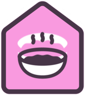 Desert Cookhouse | 8 | Fun 4 | Community | 6 | Serves food or drink from 1 pile |
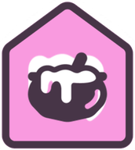 Fondue Bar | 6 | Fun 4 | Community | 6 | Serves food or drink from 1 pile |
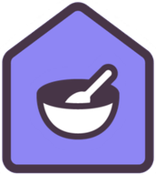 Open Kitchen | 8 | Community 4 | Fun | 6 | Serves food or drink from 1 pile |
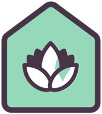 Zen Garden | 2 | Wellness 1.3 | Community or Fun | 13.3 | — |
| Communal Plaza | 2 | Community 1.2 | Community or Fun | 5 | — |
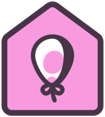 Playground | 2 | Fun 1.2 | Community or Fun | 10 | — |
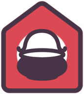 Porridge Cookhouse | 4 | Community 1 | Fun | 6 | Serves food or drink from 1 pile |
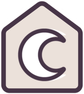 Ritual of Hidden Light | 5 | Community 1, Fun 1, Wellness 1 | Community or Fun | 12 | — |
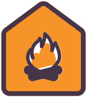 Bonfire | 8 | no units on the spot itself | Community or Fun | 8.4 | — |
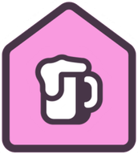 Brewery | 6 | no units on the spot itself | Community or Fun | 8.4 | Serves food or drink from 3 piles |
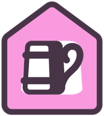 Mead Hall | 4 | no units on the spot itself | Community or Fun | 8.4 | Serves food or drink from 1 pile |
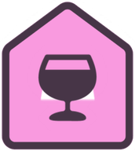 Winery | 6 | no units on the spot itself | Community or Fun | 8.4 | Serves food or drink from 5 piles |
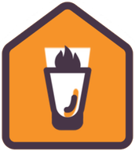 Winter Pub | 4 | no units on the spot itself | Community or Fun | 8.4 | Serves food or drink from 1 pile |
How to read it
Spots are how many villagers can use the place at once. One visit gives is what each villager gains per use; A unit here is the same unit as on a food or drink item: for Community, Fun, Wellness and Cooling the meter falls 20 a day and one unit restores 25 points, so a 1.2-unit plaza visit covers about a day and a half of decay and a 6-unit pier or park visit fills the meter (assuming a spot's units convert like an item's, which the field names say and nobody has timed). See the Needs page. Can be picked when seeking is a stored switch: a villager looking for Community or Fun may set out for the place. Eating spots are switched off for the need they themselves give (an Open Kitchen cannot be picked for Community, a Fondue Bar not for Fun): you go there to eat, and the bonus comes with the meal. Where a spot shows no units, the value sits elsewhere: the dish or drink carries the food units at pubs and cookhouses, and the Bonfire's warmth comes from its heat pile (see its Heating row).
Spots come in two moods: the files hold separate animations for using a spot alone and with company, and most spots name a neighbour. Community by its nature needs company, so a lone villager on a bench gains less than the table suggests; the exact rule is code.
A villager cannot reuse the same spot straight away: the stored delay is 0.5–0.7 of a day depending on the place.
From every social spot on each building prefab (15 buildings), their eating-place and spot-type settings. Visit length is the raw stored value, not days or seconds. Buildings not listed carry no social spots.